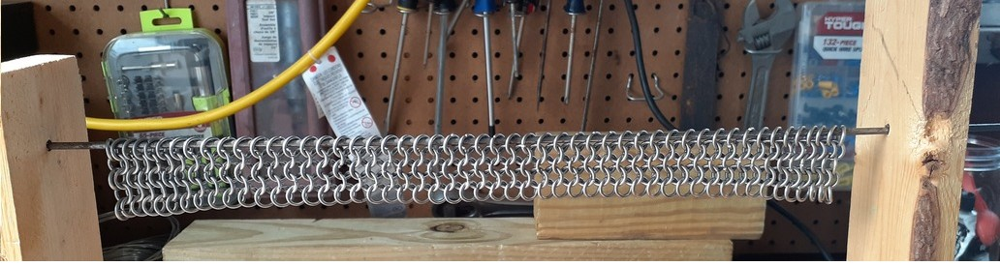
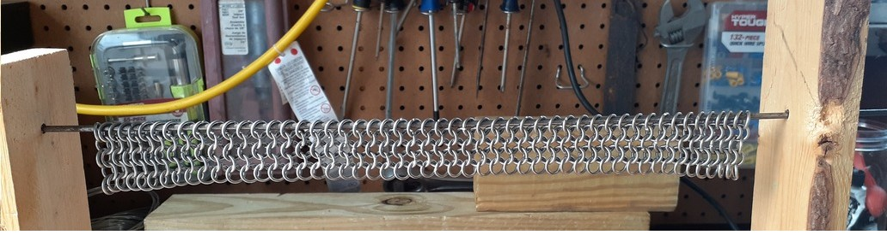

What you need to make 4 in 1 European chainmail.
Step One
Step Two
Fun Facts
- Rings with an aspect ratio of 1 (I suggest 16 Gauge and the inner diameter of ¼)
- Two pliers
- A stand with a 1/8 steel rod though it to put the rings on.s
- 10 bobby pins
There are 3 kinds of rings, opened, closed, and cut. Cut rings are just ring that have had nothing done to them. Closed rings are where you use pliers and close the two ends together to make it into a donut. Lastly opened rings are where you bend the ring back so you can put closed rings in them and close it back up (See image 1 for example). First determine what you plan on making depending on how big it is you will need to make it in many sheets of mail, to start off a sheet put a decent number of closed rings on the stand with the rod, how ever many rings you choose that is how long your rows will be. If you choose 50 then every odd row will be 50 and every even row 49.
Now that you’ve got row one done, we move on to adding the second row, to start take an opened ring and put it through two of the closed rings at the end of line one, next take another opened ring and put it the second and third ring of line one it should end up sharing one ring with the pervious opened ring. Now repeat the last step until you reach the end of the line, there should be a ring on the end of line one with only one ring from line two that is what you want. Now we will add line three, to add it first add one opened ring to the last ring of line two, do that to both sides next repeat what you did with line to until you reach the end. Now you have made the 3 lines you can just repeat the steps for line 2 and line 3 until you reach your desired length.
The oldest intact piece of chainmail is from the 1300s. Plate armour use to be a supplement to chainmail, until it switched making chainmail the supplement for plate. Chainmail could be found as far as the late 19th century.

 
